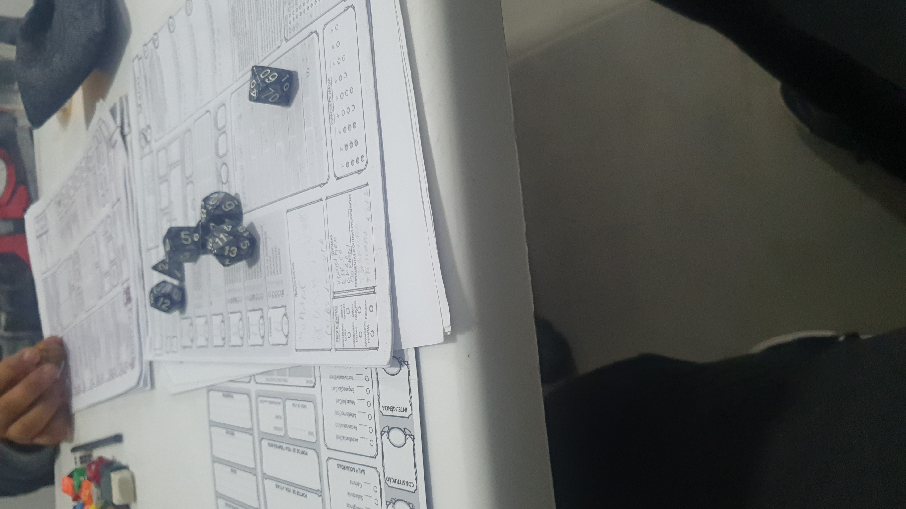
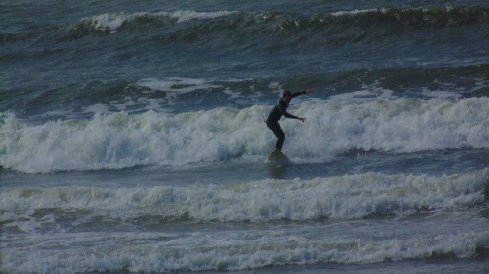
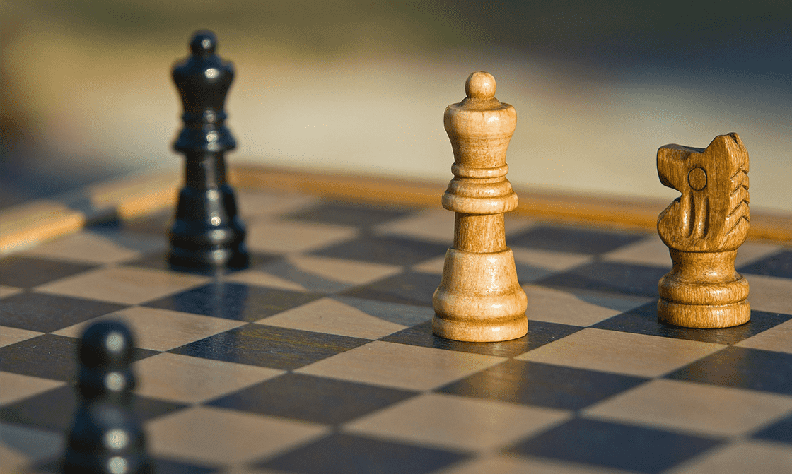
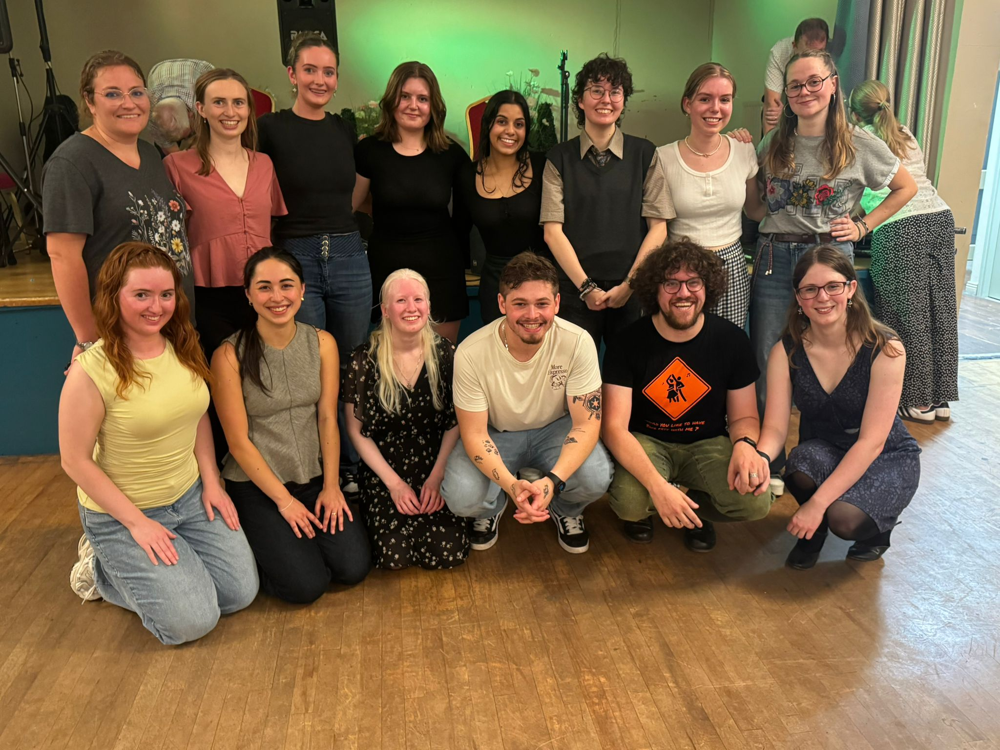
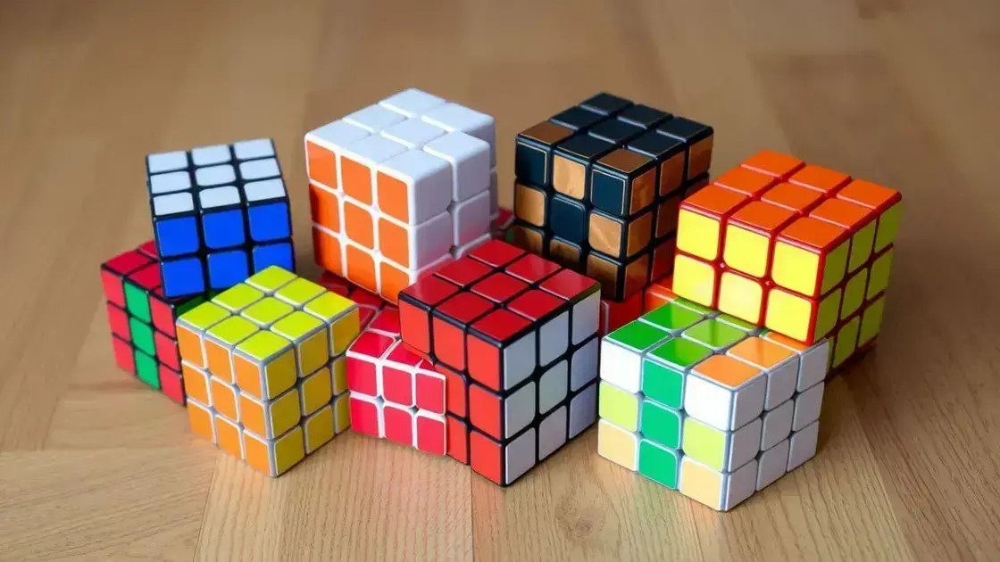

Welcome the hobby section
This page is exclusively focused in my hobbies and things I like to do in my personal life.
RPG
Role Play Gaming is simply the best game ever. You can play it with friends or even strangers. It is a game totally focused on creativity, imagination, and teamwork. I love this, and I recommend everyone try it when they have the chance. Even though it looks hard at the beginning, it is totally worth it.



Surfing
Surfing is a sport that definitely looks easier than it is. It took me ages to learn how to surf properly, and even nowadays it is still hard to surf in places with big waves.
I strongly adivise everyone to try it as well is really refreshing and energizing in a certain way.
Chess
Ches is not as exciting as the other things I do, but is also something I do find some fun and kinda challanging, so it is always good to play with friends or through Chess.Com.
If you like a challange go for it and maybe we play one mach any time soon.


Dancing
Irish set dancing it is one of the best dances I have ever learnt, it is extremely fun when you have a few friends to go with, and if you do not have, there will always be some random elder to make pair with anyway, so you will definitely have some fun, but I would strongly adivise to not start in the Céilís that are the events to dance.
It is way funnier than it looks, I highly recommend.
Puzzles
This is the weirdest of all my hobbies. It is not common, but I love to buy new different cubes or triangles, like Rubik’s Cube style puzzles, and try to solve them following my own logic without checking for a solution. Sometimes I spend uncountable hours trying to solve one of them, but that is basically the fun of it. It is like a puzzle where you find pieces and assemble them together, the only difference is that all the pieces are already there, just in the wrong positions.
If you like puzzles, you should definitely try one of these.


Gaming
Not common when you get older, but I still love to play games. I have several games in my accounts and have spent several hours playing them. I can play for hours straight. The only sad part is that it is kind of hard to have lots of time in adulthood to play often.
But if you have a console or the chance to try gaming, I would always go for it.